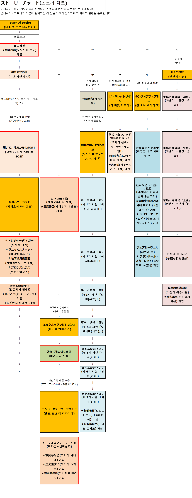

1. (프롤로그) -> (파트너 후토 가입) -> 이변 해결의 길 -> (파트너 코메이지 사토리 가입) -> 닿아줘, 지저에서의 SOS!
2. (와타츠키 버니랜드로 이동) -> 트레저 디거 -> 애니멀 루나넷 -> 지하 놀이기구 보관실 -> 브론즈 하우스 -> 긴급사태 발생
3. 미라클 앰비션스-기적의 시작 -> 앤드 오브 더 디자이어
1. 심룡점혈
2. 모노노베노 후토와 7개의 시렌
3. 미라클 앰비션스 -> (파트너 코치야 사나에, 모리야 스와코, 키리사메 마리사 가입)
1. 카센 도장의 최종 시렌까지 -> (파트너 카센 가입)
2. 오쿠의 선물(닿아줘, 지저에서의 SOS! 클리어 후 발생) -> (파트너 우츠호 가입)